Puedes ir al santuario desde que llegas a la región de la torre de Farone. Lo encuentras situado justo detrás de la Posta del lago, encerrado en una cueva. Tienes que usar una bomba para abrir la entrada de la cueva y poder encontrarlo.
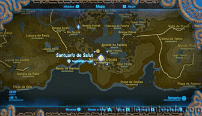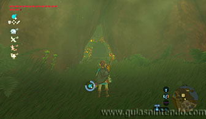
Una vez dentro vas a encontrar un balancín que puedes paralizar con tu módulo y así usarlo de rampa para subir.
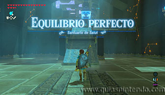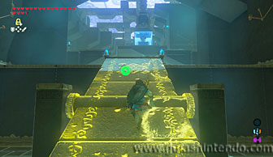
Después haz lo mismo con el segundo balancín para llegar a un cofre que contiene una Espada real. Ahora vuelve al último balancín y deja que se venza hacia el otro lado, después paralízalo y así podrás subir y seguir avanzando. Al fondo verás otros dos balancines.
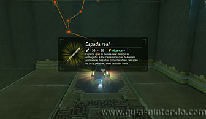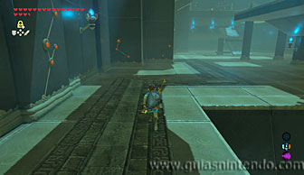
Haz que se invierta el balancín de más abajo y después paralízalo. Así podrás subir por él y dirigirte hacia el segundo balancín.
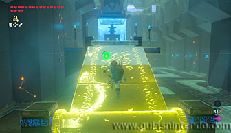
Sube corriendo y salta hacia el segundo balancín lo más al borde que puedas, al caer en él no dejes de correr y podrás pasarlo sin caerte. Así alcanzarás el altar del santuario.
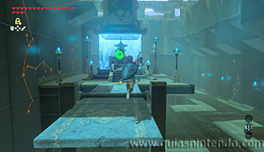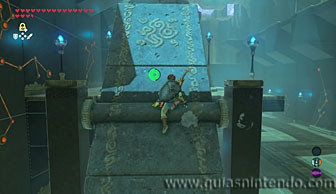
Antes de irte puedes coger el segundo cofre que se encuentra en una plataforma elevada enfrente del altar. Para llegar a él tienes que traer con el imán el primer cofre que encontraste. Colócate en el extremo más lejano al cofre del balancín cercano y después deja caer el cofre en el extremo opuesto para que al caer te eleve.
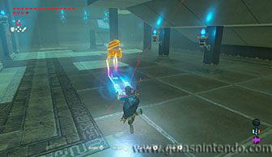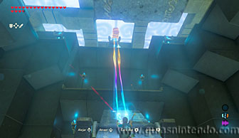
Usa la paravela para planear y llegar hasta él. Contiene un núcleo ancestral.
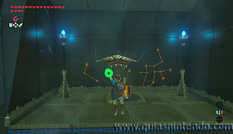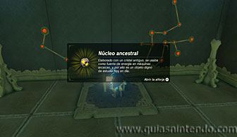
Ahora sí, podrás repetir la operación anterior para llegar al altar. Si te resulta muy complicado puedes usar el mismo truco que para alcanzar el segundo cofre (dejar caer el cofre para elevarte y planear).
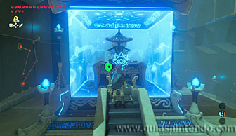